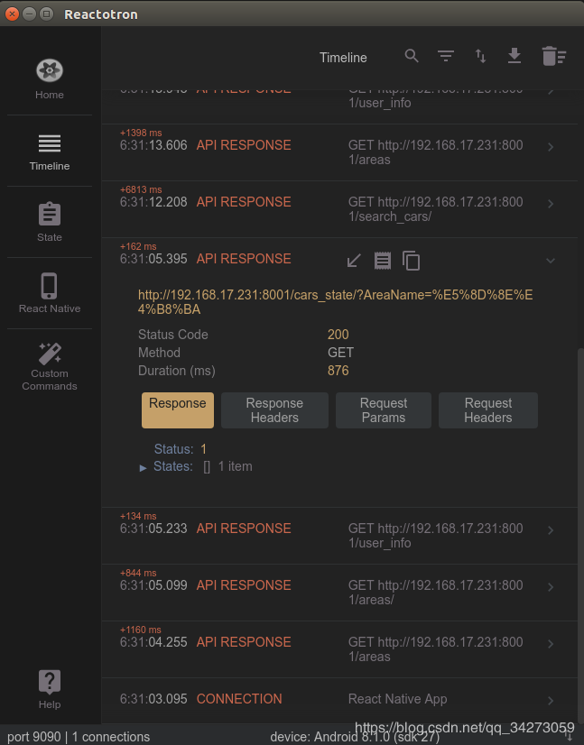

网络调试工具Reactotron
react native的debug模式下；虽然能console调试；但是不能像前端web开发一样在控制台network中显示网络请求；reactotron是很好的react native的网络请求调试工具；可以实现web开发中的network调试功能；其详细安装配置步骤如下：
下载相应版本reactotron
安装reactotron在自己的RN项目中的dev依赖上
npm i --save-dev reactotron-react-native
在项目目录下创建ReactotronConfig.js 文件，并且将以下代码粘贴进去
import Reactotron from 'reactotron-react-native'
Reactotron
.configure() // controls connection & communication settings
.useReactNative() // add all built-in react native plugins
.connect() // let's connect!
最后在App.js或者index.js中引入ReactotronConfig.js，添加以下代码：
//注意此处文件路径改为自己项目中的相对路径
if(__DEV__) {
import('./ReactotronConfig').then(() => console.log('Reactotron Configured'))
}
现在便可以进行相关网络请求的调试；注意：其默认监听的端口为9090，确保其没有被占用的情况下使用；并且如果是用真机调试，请开启9090连接
adb reverse tcp:9090 tcp:9090

博客地址：smileyqp's Blog